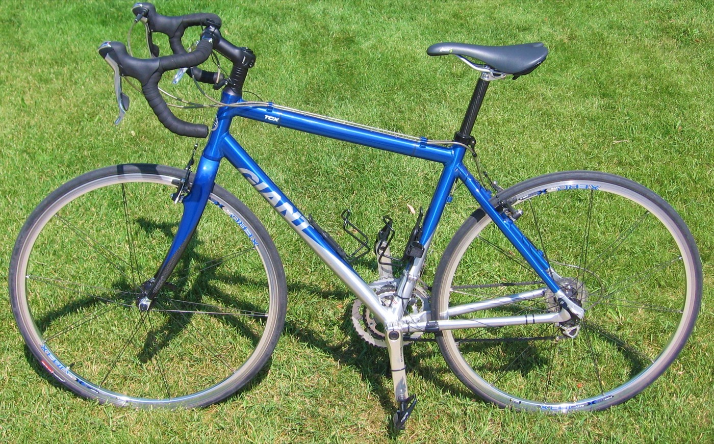

產品革新：TCR 改寫公路車設計語言
1997 年，捷安特與傳奇設計師 Mike Burrows 合作推出 TCR（Total Compact Road）車架，以較小的三角形車架搭配加長座管，顛覆傳統公路車幾何設計。這項「壓縮車架」（Compact Road）概念在當時相當激進，甚至一度遭國際自由車總會（UCI）質疑是否合乎規範，最終捷安特成功說服 UCI，證明此設計能同時兼顧輕量化與操控性。TCR 後來成為業界主流設計語言，也奠定捷安特在公路車領域的技術話語權。

品牌矩陣：不只有 Giant
今日的巨大集團旗下不只有 Giant 一個品牌，而是形成完整的產品矩陣，分別鎖定不同的騎乘族群與市場定位。
2008
Liv
全球首個純女性自行車品牌，由全女性團隊主導設計、行銷，打造專屬女性車架幾何的公路、越野與砂石車款。
Urban
momentum
主打城市通勤與休閒騎乘，強調舒適性與日常實用性，鎖定都會代步族群。
Performance
CADEX
高階自行車零組件品牌，專攻碳纖維輪組與零件研發，服務職業與競賽級車手。